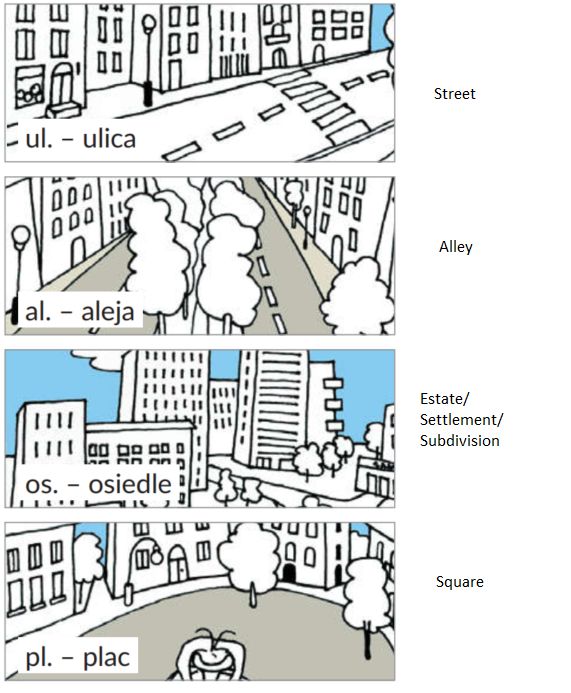
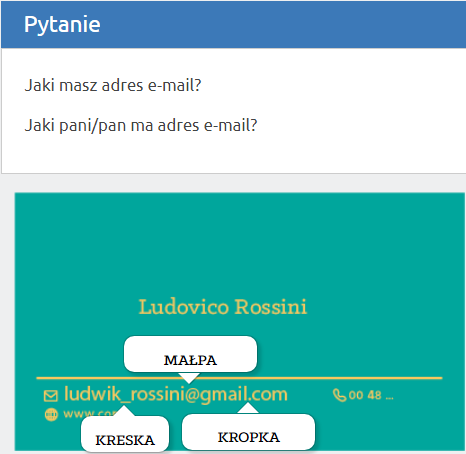
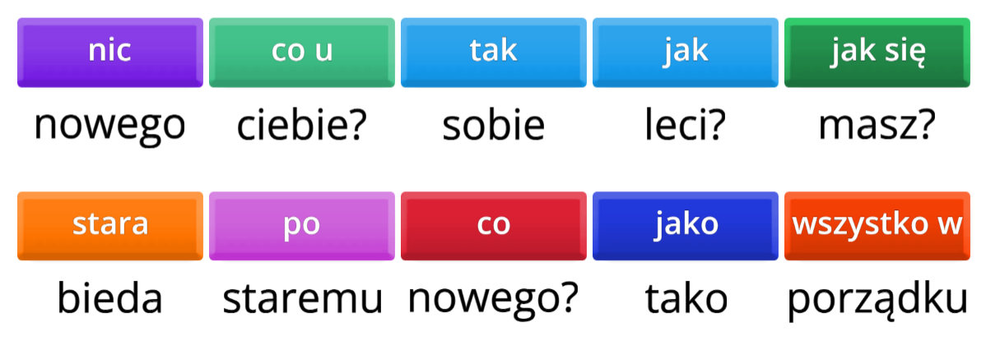
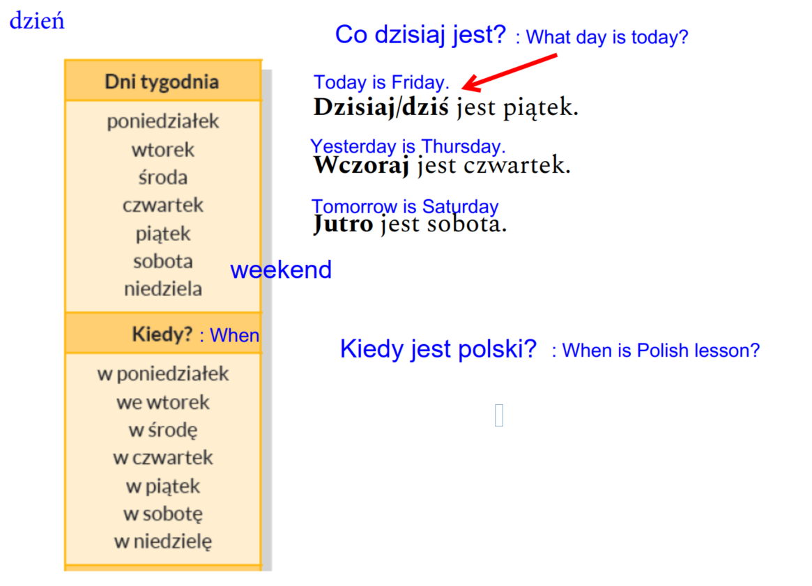
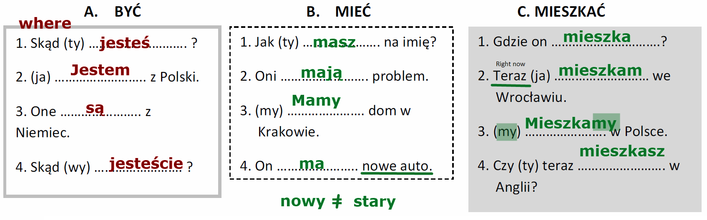
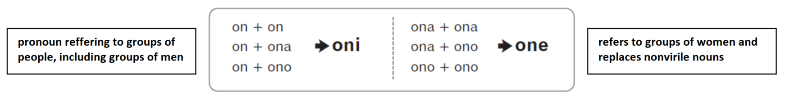
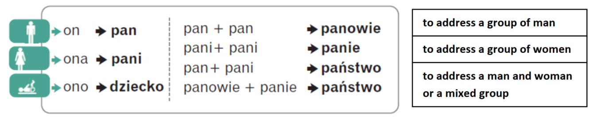

Index:
Udemy Polish Course:
Section 1: Day 1: Basics
Index for personal Polish notes:
Lecture 1: Lecture 1: 31st July (Alphabets, basic questions)
Lecture 2: Lecture 2: 4th August (Pronounce tricky words, statements with Proszę...)
Lecture 3: Lecture 3: 7th August (Numbers)
Lecture 4: Lecture 4: 11th August (Days of the week)
Lecture 5: Lecture 5: 18th August (Verbs and its forms)
Lecture 6: Lecture 6: 21st August (Numbers 11-200)
Lecture 7: Lecture 7: 21st August (Numbers 11-200)
Section 1: Day 1 Basics
Lecture 1: How Polish Works?
- Link to Lecture
- Polish Cheat Sheet PDF.
- Polish characters utf8 don't show right fix on SO.
- Polish is based on Latin alphabet and includes certain letters with diacritics:
a) Ą ą - nasal o, as French bon
b) Ć ć - cheap
c) Ę ę - nasal e, as French cinq
d) Ł ł - will
e) Ń ń - canyon
f) Ó ó - boot
g) Ś ś - sheep
h) Ż ż - vision
i) Ź ż - vision
- All of the above letters can be typed by Right Alt + English Character. Except for the last one, which is typed by Alt + x, giving Ż, as opposed to Alt + z that gives Ż.
- Polish has dimunitive forms. Which means that words can have different endings. It's a sort of endearment. Like how we have Charles and Charlie. Similarly, we can have Adam, Adaś, Adasiek, Adasik, Adaśko.
- Polish has three genders: feminine, masculine, neuter.
- Polish has 7 cases: Nominative, Genitive, Accusative, Dative, Instrumental, Locative, and Vocative.
- Online shopping: Allegro + paczkomaty
- Public transport: jakdojadę.pl / intercity.pl (for trains between cities)
- Medicine (English speaking doctors): znanylekarz.pl / gdziepolek.pl
- Odmiana.net to check for cases.
- Diki.pl for translating polish to english
- Polish Cheat Sheet PDF.
- Polish characters utf8 don't show right fix on SO.
- Polish is based on Latin alphabet and includes certain letters with diacritics:
a) Ą ą - nasal o, as French bon
b) Ć ć - cheap
c) Ę ę - nasal e, as French cinq
d) Ł ł - will
e) Ń ń - canyon
f) Ó ó - boot
g) Ś ś - sheep
h) Ż ż - vision
i) Ź ż - vision
- All of the above letters can be typed by Right Alt + English Character. Except for the last one, which is typed by Alt + x, giving Ż, as opposed to Alt + z that gives Ż.
- Polish has dimunitive forms. Which means that words can have different endings. It's a sort of endearment. Like how we have Charles and Charlie. Similarly, we can have Adam, Adaś, Adasiek, Adasik, Adaśko.
- Polish has three genders: feminine, masculine, neuter.
- Polish has 7 cases: Nominative, Genitive, Accusative, Dative, Instrumental, Locative, and Vocative.
- Online shopping: Allegro + paczkomaty
- Public transport: jakdojadę.pl / intercity.pl (for trains between cities)
- Medicine (English speaking doctors): znanylekarz.pl / gdziepolek.pl
- Odmiana.net to check for cases.
- Diki.pl for translating polish to english
Lecture 2: Polish alphabet and writing
- Link to lecture
-
-
Lecture 1
Pronouncing Alphabets
- How to pronounce Polish alphabets
- Lecture 1 PDF
- Link to page containing pronunciation of words that are different in Polish when compared to English.
- c is a /ts/ sound. Like TSUNAMI.
- ę at the end of a word is pronounced just like polish letter e.
- Ó and U have the same oo sound.
- ż is a hard sound, and ź is a softer sound. Sound from L2.
- Polish does not have the letter v. So if you want to use it, it's pronounced as /fał/.
- Lecture 1 PDF
- Link to page containing pronunciation of words that are different in Polish when compared to English.
- c is a /ts/ sound. Like TSUNAMI.
- ę at the end of a word is pronounced just like polish letter e.
- Ó and U have the same oo sound.
- ż is a hard sound, and ź is a softer sound. Sound from L2.
- Polish does not have the letter v. So if you want to use it, it's pronounced as /fał/.
Basic words in Polish
- Co: What. Co słychać? (What's up?)
- Kto: Who. Kto to jest? (Who is this?)
- Gdzie: Where. Gdzie mieszkasz? (Where do you live?)
- Kiedy: When. Kiedy weekend? (When is the weekend?)
- Dlaczego: Why.
- Jak: How. Well I guess Jak can also mean "What"?
- Tutaj / Tu: Here.
- Tam: There
- Ja: I
- Ale: But
- Jestem: I am
- Imię / Nazywa: Full name / First name
- Nazwisko: Last name
- Kto: Who. Kto to jest? (Who is this?)
- Gdzie: Where. Gdzie mieszkasz? (Where do you live?)
- Kiedy: When. Kiedy weekend? (When is the weekend?)
- Dlaczego: Why.
- Jak: How. Well I guess Jak can also mean "What"?
- Tutaj / Tu: Here.
- Tam: There
- Ja: I
- Ale: But
- Jestem: I am
- Imię / Nazywa: Full name / First name
- Nazwisko: Last name
Random words that come up
Lecture 2
Resources
Revision
- Pronouncing polish names.
- sz sound is श sound. Think Szampon.
- rz sound is za sound which is the same as ż which is an alphabet and you can hear how to pronounce it here. Check how to say malarz (painter).
- cz sound is च sound. Think Czesc.
- dz sound is ज sound. Like j in judge or jeans.
- ch sound is kind of like soft ख sound. Think Chleb (bread).
- Ó and U have the same oo sound.
- sz sound is श sound. Think Szampon.
- rz sound is za sound which is the same as ż which is an alphabet and you can hear how to pronounce it here. Check how to say malarz (painter).
- cz sound is च sound. Think Czesc.
- dz sound is ज sound. Like j in judge or jeans.
- ch sound is kind of like soft ख sound. Think Chleb (bread).
- Ó and U have the same oo sound.
Some tricky words to pronounce
C, CI = Ć, CZ
S, SI = Ś, SZ
Z, ZI = Ź, Ż=RZ
DZ, DZI = DŹ, DŻ
More tricky words to pronounce
a) że / źle
b) Lech / lecz
c) rzeka / szuka. rz is pronounced the same as ż.
d) dżudo / cudo. dż is like j in jeans, c is like /ts/
e) baco / bardzo
f) Skoda / środa
g) cztery / szeryf
h) są / sok
i) palić / palisz
j) poszła / poczta
k) łazanki / łazienka
l) groch / grosz
b) Lech / lecz
c) rzeka / szuka. rz is pronounced the same as ż.
d) dżudo / cudo. dż is like j in jeans, c is like /ts/
e) baco / bardzo
f) Skoda / środa
g) cztery / szeryf
h) są / sok
i) palić / palisz
j) poszła / poczta
k) łazanki / łazienka
l) groch / grosz
Hello! Goodbye!
Phrases with "Please"/Proszę
Lecture 3
Resources
- Link to lecture
- Conversations pdf
- Numbers pdf
- Name + Surname check wordwall
- Cześć, co słychać wordwall?
- Adding numbers wordwall
- Hear and match words
- Conversations pdf
- Numbers pdf
- Name + Surname check wordwall
- Cześć, co słychać wordwall?
- Adding numbers wordwall
- Hear and match words
Jak się masz? : How are you?
- świetnie +++ (Great)
- bardo dobrze ++ (Very Good)
- dobrze + (Good)
- tak sobie - (Not great)
- źle -- (Badly)
- bardzo źle --- (Very Badly)
- fatalnie ----- (Disastrously)
- So if the question was: Jak ona się ma? which translates to "How is she?", you could reply with Ona się ma dobrze.
- Or you could reply with wszystko w porządku.
- Another similar question could be Co słychać? which would literally translate to "What's up?".
- bardo dobrze ++ (Very Good)
- dobrze + (Good)
- tak sobie - (Not great)
- źle -- (Badly)
- bardzo źle --- (Very Badly)
- fatalnie ----- (Disastrously)
- So if the question was: Jak ona się ma? which translates to "How is she?", you could reply with Ona się ma dobrze.
- Or you could reply with wszystko w porządku.
- Another similar question could be Co słychać? which would literally translate to "What's up?".
Jak on/oni się nazywa?
- Section timestamp.
- Jak on ma na imię? : What is his name?
- Jak ona ma na imię? : What is her name?
- On is used for males, and ona is used for females.
- So the answer could be: On nazywa się Krsysiek Bogacki in the case of males. And Ona ma na imię Anna in the case of females. We are using nazywa for the male because we know his first as well as last name. nazywa is normally used when we know both. In the case of Anna, we only know her first name, and hence we use imię.
- Jak on ma na imię? : What is his name?
- Jak ona ma na imię? : What is her name?
- On is used for males, and ona is used for females.
- So the answer could be: On nazywa się Krsysiek Bogacki in the case of males. And Ona ma na imię Anna in the case of females. We are using nazywa for the male because we know his first as well as last name. nazywa is normally used when we know both. In the case of Anna, we only know her first name, and hence we use imię.
Conversation section
Czy / Kto
- Czy is used to start a question. So you can ask: Czy masz na imię Rafael?
which would mean "Is your name Rafael?". It can mean or, whether, if, will
- Kto. It means "Who". So you can ask: Kto mieszka w Warszawie? which would translate to "Who lives in Warsaw?".
- Kto. It means "Who". So you can ask: Kto mieszka w Warszawie? which would translate to "Who lives in Warsaw?".
Numbers 0 -10
Understanding addresses and emails
- Section timestamp
- Addresses will have a "/". As in, 10/3. The "/" is called przez.
- Email characters are pronounced differently.
- Addresses will have a "/". As in, 10/3. The "/" is called przez.
Show Image 

_ is kreska (or instead of kreska, what is preferred is podkreślnik), @ is Małpa, . is Kropka.
Show Image

Lecture 4
Resources
- Link to lecture.
- Lecture pdf
- Zakupy (Shopping items)
- Co słychać? wordwall.
- Unscramble days of the week wordwall.
- Arrange dialog in order wordwall.
- Co u pani słychać? wordwall.
- Lecture pdf
- Zakupy (Shopping items)
- Co słychać? wordwall.
- Unscramble days of the week wordwall.
- Arrange dialog in order wordwall.
- Co u pani słychać? wordwall.
Co słychać? : How are you?
- co nowego / co u ciebie / jak się masz: Different ways of asking "What's up?"
- jak leci: Least formal way of saying "How is it going" / "What's up?"
- co nowego?, response would be nic nowego. Meaning: "What's new?", "Nothing's new".
- tak sobie / jako tako synonyms for "so-so". Sample conversation: Co słychać? Jako tako.
- po staremu is another way of saying nic nowego. nowego means "new" and stare means "old". So where nic nowego means "nothing new", po staremu means "everything old".
- stara bieda. stara means "old", bieda means "poor". So stara bieda would mean "everything is very poor".
- wszystko w porządku means "everything is fine".
- You can say "Mam na imię Filip", or in short "Jestem Filip".
- Stadion Narodowy here Narodowy means "National". So you will see Muzeum Narodowy, Bank Narodowy.
- budynek means building. Similarly we have urząd which means "office". Think urząd miasta.
- jak leci: Least formal way of saying "How is it going" / "What's up?"
- co nowego?, response would be nic nowego. Meaning: "What's new?", "Nothing's new".
- tak sobie / jako tako synonyms for "so-so". Sample conversation: Co słychać? Jako tako.
- po staremu is another way of saying nic nowego. nowego means "new" and stare means "old". So where nic nowego means "nothing new", po staremu means "everything old".
- stara bieda. stara means "old", bieda means "poor". So stara bieda would mean "everything is very poor".
- wszystko w porządku means "everything is fine".
- You can say "Mam na imię Filip", or in short "Jestem Filip".
- Stadion Narodowy here Narodowy means "National". So you will see Muzeum Narodowy, Bank Narodowy.
- budynek means building. Similarly we have urząd which means "office". Think urząd miasta.
Show Image

Dni tygodnia : Days of the week
- Section timestamp
- Source.
- Days of the week:
- Pronunciations:
1) Monday
2) Tuesday
3) Wednesday
4) Thursday
5) Friday
6) Saturday
7) Sunday
- Co dzisiaj jest? (meaning: What day is today) Dzisiaj jest piątek (meaning: Today is Friday).
- Wczoraj jest czwartek (meaning: yesterday is Thursday).
- Jutro jest sobota (meaning: Tomorrow is Saturday).
- Source.
- Days of the week:
Show Image

1) Monday
2) Tuesday
3) Wednesday
4) Thursday
5) Friday
6) Saturday
7) Sunday
- Co dzisiaj jest? (meaning: What day is today) Dzisiaj jest piątek (meaning: Today is Friday).
- Wczoraj jest czwartek (meaning: yesterday is Thursday).
- Jutro jest sobota (meaning: Tomorrow is Saturday).
Lecture 5
Resources
- Link to lecture.
- Lecture pdf: Changing Verb forms
- Lecture pdf: Co Słychać
- Czasownik "być" wordwall.
- To have wordwall.
- The verb to be wordwall.
- Lecture pdf: Changing Verb forms
- Lecture pdf: Co Słychać
- Czasownik "być" wordwall.
- To have wordwall.
- The verb to be wordwall.
Conversations
- // TODO: The last two conversations starting here are not clear.
- Mnie is another case for ja. Ja means "I". Mnie is another case of it that means the same thing. We will look at cases later in the course.
- Polish is an inflective language. It means that grammatical endings play an indispensable role in the language's grammatical system. Polish grammar, when compared to English is also very difficult. Polish uses a case system. For example, in English you can say "on the box", or "in the box", or "under the box". The word "box" stays the same irrespective of the context in which it is being used. Once you know the word "box", you can relax, you know it. In Polish, as in other Slavic languages, the word for "box" changes with the way it's used. Additionally, you have to worry about modifiers and genders that change the word further. This can result in challenges when you try to directly translate Polish to English.
- Also, word order is usually different, with the organisation of thought almost reversed from English, so that the stuff that you put at the beginning of an English sentence usually ends up at the end of a Polish sentence and vice-versa.
- Probably in your languages you don't have cases. In Polish we have 7 cases, but we only use 6. In English, the order of words is very important. In Polish not so much. Because in Polish we have endings. Only Polish and Portuguese have nasal vowels.
- Mnie is another case for ja. Ja means "I". Mnie is another case of it that means the same thing. We will look at cases later in the course.
- Polish is an inflective language. It means that grammatical endings play an indispensable role in the language's grammatical system. Polish grammar, when compared to English is also very difficult. Polish uses a case system. For example, in English you can say "on the box", or "in the box", or "under the box". The word "box" stays the same irrespective of the context in which it is being used. Once you know the word "box", you can relax, you know it. In Polish, as in other Slavic languages, the word for "box" changes with the way it's used. Additionally, you have to worry about modifiers and genders that change the word further. This can result in challenges when you try to directly translate Polish to English.
- Also, word order is usually different, with the organisation of thought almost reversed from English, so that the stuff that you put at the beginning of an English sentence usually ends up at the end of a Polish sentence and vice-versa.
- Probably in your languages you don't have cases. In Polish we have 7 cases, but we only use 6. In English, the order of words is very important. In Polish not so much. Because in Polish we have endings. Only Polish and Portuguese have nasal vowels.
Co Słychać? / Co u ciebie?
- Section timestamp.
- Co słychać is unofficial. Co u pana / pani słychać is official because it contains pana/pani.
- We looked at possible replies in the earlier lecture. Then if you want to ask them back, then you can say A u ciebie, or A u pana / pani? if you want to be formal.
- When someone asks Jak się masz (meaning: how are you?), we normally reply with Dobrze, a ty? (meaning: good, and you?). But when someone asks Co słychać, we don't reply with Dobrze, a ty?, instead we say Dobrze, a u ciebie?
- Co słychać is unofficial. Co u pana / pani słychać is official because it contains pana/pani.
- We looked at possible replies in the earlier lecture. Then if you want to ask them back, then you can say A u ciebie, or A u pana / pani? if you want to be formal.
- When someone asks Jak się masz (meaning: how are you?), we normally reply with Dobrze, a ty? (meaning: good, and you?). But when someone asks Co słychać, we don't reply with Dobrze, a ty?, instead we say Dobrze, a u ciebie?
Different forms of three basic verbs
- Section timestamp.
- Linking pdf related to this section again.
- The overarching point of the section is that in Polish verbs have different endings depending on the context in which they are being used. There is a "base" form of the verb that is called the infinitive form of the verb. In 95% of the cases, these infinitive forms end with the letter ć.
- For instance, consider the following conversation: Jak masz na imie? Mam na imię.... Here, masz and mam are two variations of the same verb mieć. But because they are being used in different contexts (used with different pronouns), the word ending changes.
- The table below shows the usage of three verbs. The heading of the column is the infinitive form of the verb. The values in the column are how that verb changes when it is being used with different personal pronouns present in the "Word" column. So for example, if you were writing "I live...", you wouldn't say "Ja mieszkam...". You would just say "Mieszkam...". The fact that you are talking about yourself is implicitly conveyed by the usage of the "am" ending of the infinitive verb mieszkać.
- Similarly if you were saying "You(plural) have...", you would just say "Macie..." and not "Wy macie..". (Read the asterisk point below).
- być is an irregular form(?) and hence the word is different when compared to the other two verbs that have a regular form.
- Also note that there are only three tenses in Polish: past, present, future. Every thing that we are doing here is in the present tense only. We will look at tenses later.
- Note the words that have an *. The rules dictate that these words should be hidden when you are forming sentences. For example, you write: Mam na imię Alice, and not Ja mam na imię Alice. We don't need the "Ja" because of endings. "Mam" is typical only for "Ja". That's why it is not necessary.
- But in the case of the words without an asterisk, we have many options. If you wanted to say "She has...", you would say "Ma..", but you lost the information about whether you are referring to a "On/Ona/Ono/Pan/Pani". Hence, in that case you DO prepend the "Word" before the verb to preserve that information. So you write Ona ma na imię.
- The same logic applies to the "Oni/One/Państwo" row as well.
- Another example, suppose you wanted to ask: "What is your name?", you would say Jak masz na imię?. Now you want to ask: "What is her name?", you say: Jak ona ma na imię?. So how to answer: Ona ma na imię Eva.
- Short exercise to test your understanding of this:
- Another exercise that goes over this: Section 10 and 11.
- Linking pdf related to this section again.
- The overarching point of the section is that in Polish verbs have different endings depending on the context in which they are being used. There is a "base" form of the verb that is called the infinitive form of the verb. In 95% of the cases, these infinitive forms end with the letter ć.
- For instance, consider the following conversation: Jak masz na imie? Mam na imię.... Here, masz and mam are two variations of the same verb mieć. But because they are being used in different contexts (used with different pronouns), the word ending changes.
- The table below shows the usage of three verbs. The heading of the column is the infinitive form of the verb. The values in the column are how that verb changes when it is being used with different personal pronouns present in the "Word" column. So for example, if you were writing "I live...", you wouldn't say "Ja mieszkam...". You would just say "Mieszkam...". The fact that you are talking about yourself is implicitly conveyed by the usage of the "am" ending of the infinitive verb mieszkać.
- Similarly if you were saying "You(plural) have...", you would just say "Macie..." and not "Wy macie..". (Read the asterisk point below).
| Singular/Plural | Word | English meaning | być (to be) | mieć (to have) | mieszkać (to live) |
|---|---|---|---|---|---|
| Singular | ja * | I | jestem | mam | mieszkam |
| Singular | ty * | You | jesteś | masz | mieszkasz |
| Singular | on/ona/ono pan/pani |
he/she/it (can also refer to a child) also he/she but used in official places |
jest | ma | mieszka |
| Plural | my * | We | jesteśmy | mamy | mieszkamy |
| Plural | wy * | You (but in plural form) | jesteście | macie | mieszkacie |
| Plural | oni/one państwo |
they also they but used in official places |
są | mają | mieszkają |
- Also note that there are only three tenses in Polish: past, present, future. Every thing that we are doing here is in the present tense only. We will look at tenses later.
- Note the words that have an *. The rules dictate that these words should be hidden when you are forming sentences. For example, you write: Mam na imię Alice, and not Ja mam na imię Alice. We don't need the "Ja" because of endings. "Mam" is typical only for "Ja". That's why it is not necessary.
- But in the case of the words without an asterisk, we have many options. If you wanted to say "She has...", you would say "Ma..", but you lost the information about whether you are referring to a "On/Ona/Ono/Pan/Pani". Hence, in that case you DO prepend the "Word" before the verb to preserve that information. So you write Ona ma na imię.
- The same logic applies to the "Oni/One/Państwo" row as well.
- Another example, suppose you wanted to ask: "What is your name?", you would say Jak masz na imię?. Now you want to ask: "What is her name?", you say: Jak ona ma na imię?. So how to answer: Ona ma na imię Eva.
- Short exercise to test your understanding of this:
Show Image

Oni/One: Different bifurcations of the word "They"
- Timestamp to section.
- In English we just have "they" when we are referring to a group. In Polish, the word changes depending on whether the group we are referring to have males or females or mixed.
- Oni is used for groups of people that contain men. One is used if the group contains only women. Even there is even a single man in the group, we use Oni. 10 women. One. 10 men. Oni. 10 million women, and one man. Guess what? Oni.
- In English we just have "they" when we are referring to a group. In Polish, the word changes depending on whether the group we are referring to have males or females or mixed.
- Oni is used for groups of people that contain men. One is used if the group contains only women. Even there is even a single man in the group, we use Oni. 10 women. One. 10 men. Oni. 10 million women, and one man. Guess what? Oni.
Show Image

Pan/Pani: Different usages in official settings
- Timestamp to section.
- For referring a man in official setting we use Pan. For referring to a woman in official setting, we use Pani. For referring to a child, we use dziecko. For referring to a group of people that contains both men and women in official setting we use państwo.
- For referring a man in official setting we use Pan. For referring to a woman in official setting, we use Pani. For referring to a child, we use dziecko. For referring to a group of people that contains both men and women in official setting we use państwo.
Show Image

Lecture 6
Resources
- Link to lecture.
- Lecture pdf
- Numbers wordwall.
- YT video: how to count numbers 0-99.
- Skąd jesteś? wordwall.
- Lecture pdf
- Numbers wordwall.
- YT video: how to count numbers 0-99.
- Skąd jesteś? wordwall.
Polish names for places
Poland: Polskie
New York: Nowym Jorku
USA: Ameryki
England: Anglii
Seoul: Seulu
Tokyo: Tokio
Japan: Japonii
Spain: Hiszpanii
Barcelona: Barcelonie
Russia: Rosji
Moscow: Moskwie
Paris: Paryżu
France: Francji
German: Niemieckie
Switzerland: Szwajcarskie
Austria: Austrii
Pronouncing Numbers: 11-19
- Timestamp to section.
- The general rule of thumb in forming the Polish numbers 11-19 is to add -naście to the numbers 1-9. Eg. 12 would become dwa + naście = dwanaście.
- The general rule of thumb in forming the Polish numbers 11-19 is to add -naście to the numbers 1-9. Eg. 12 would become dwa + naście = dwanaście.
Pronouncing Numbers: 20-100
- Timestamp to section
- To form these numbers, first we need to know how to pronounce the following numbers:
- If we want to say the number 21 in Polish, all we need to do is add jeden to the word dwadzieścia, making dwadzieścia + jeden = dwadzieścia jeden.
- Similarly 22 is formed following the same pattern dwadzieścia + dwa = dwadzieścia dwa, as are all subsequent numbers.
- 44 would be Czterdzieści cztery.
- 58 would be Pięćdziesiąt osiem.
- 123 would be sto dwadzieścia trzy
- To form these numbers, first we need to know how to pronounce the following numbers:
100: Sto
- Similarly 22 is formed following the same pattern dwadzieścia + dwa = dwadzieścia dwa, as are all subsequent numbers.
- 44 would be Czterdzieści cztery.
- 58 would be Pięćdziesiąt osiem.
- 123 would be sto dwadzieścia trzy
Lecture 7
Resources
- Link to lecture.
- Lecture pdf
- Dlaczego uczysz się języka polskiego? wordwall.
- żeby czy bo wordwall
- Dlaczego? Bo/żeby wordwall.
- Lecture pdf
- Dlaczego uczysz się języka polskiego? wordwall.
- żeby czy bo wordwall
- Dlaczego? Bo/żeby wordwall.